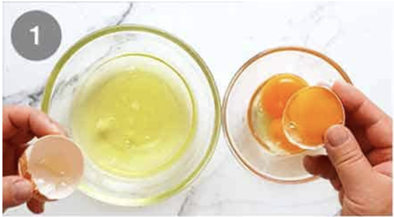

instructions
- Beat yolks and sugar in stand mixer or electric beater on speed 6 to 7 for 10 minutes or until it changes from yellow to pale yellow (almost white), and is thick . 
- Add vanilla and mascarpone, beat until just combined and smooth. Transfer mixture to a bowl, set aside.
- Clean bowl and whisk. Add egg whites and beat until it's stiff (3 minutes on speed 7, should be all white foam,)
- Add 1/2 the cream mixture into the egg whites. Gently fold through. When most incorporated, add the remaining cream mixture and fold through until just combined - don't bash out all the air in the egg whites! (Note 4)
- Mix coffee and liquor together. Quickly dip biscuits in and line the bottom of a 8”/20cm square dish.
- Spread over half the cream, then top with another layer of coffee dipped biscuits
- Spread with remaining cream.
- Cover, refrigerate for at least 4 - 5 hours, preferably overnight Dust with cocoa powder just before serving - either before you cut or after placing onto serving plates.


Nutrition
serving: 127g
- Calories: 306kcal
- Carbohydrates: 32.2g
- Protien: 5.9g
- Fat: 15.8g
- Sugar: 18.7g
- Calcium: 70mg